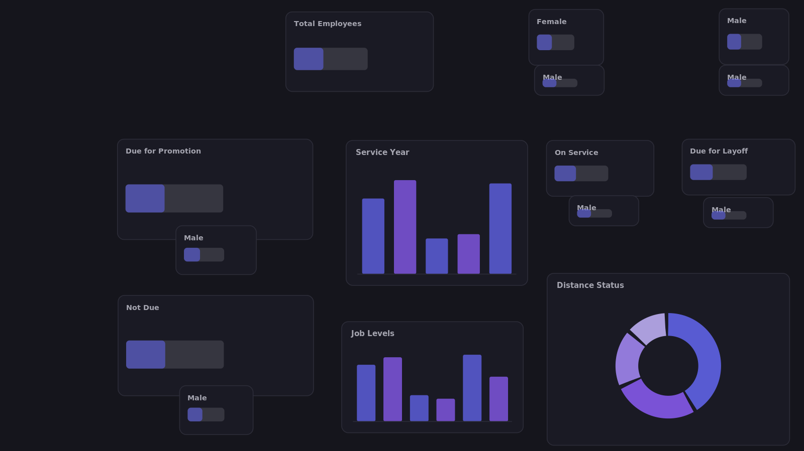
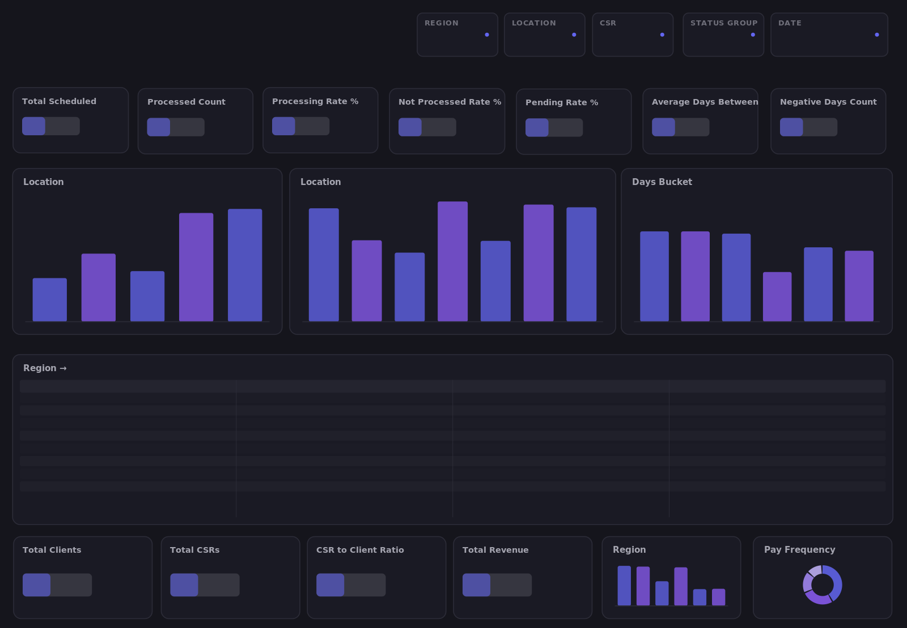
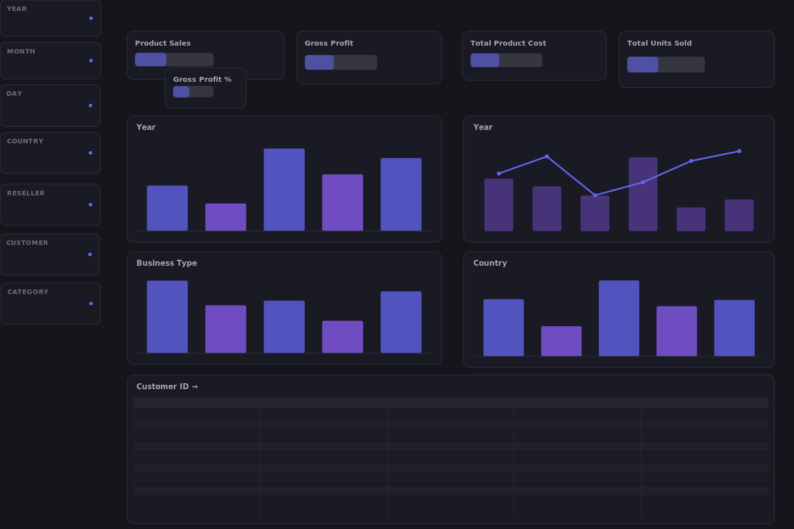

Power BI dashboards
Interactive KPI reports, executive scorecards, drill-through experiences, and DAX measures shaped around stakeholder needs.
I help teams turn disconnected data into clear Power BI dashboards, dependable reporting, and practical automation—so decision-makers can spend less time chasing numbers and more time acting on them.
Whether you need a new dashboard, a more reliable reporting process, or help untangling existing data, the work starts with the decision you need to support.
Interactive KPI reports, executive scorecards, drill-through experiences, and DAX measures shaped around stakeholder needs.
Review existing reports, validate business logic, improve usability, and make recurring reporting easier to maintain.
Combine and prepare data from supported sources, structure models, and create consistent definitions for reporting.
Identify repeatable reporting tasks that can be streamlined with tools such as Power Automate, Excel, and SharePoint.
These portfolio examples demonstrate dashboard structure and analytical approaches. Any sample or illustrative data should be treated as demonstration material, not as a claim of client business results.

A workforce overview designed to help HR teams explore headcount, tenure, job levels, and workforce movement indicators.

An operational reporting concept for monitoring payroll workload, processing status, and turnaround-time indicators across business dimensions.

A sales reporting example for reviewing revenue, gross profit, year-over-year movement, and performance across products and territories.
For confidentiality, employer and client reporting assets are not published here. A walkthrough can be discussed using approved or synthetic data only.
I aim to make the scope, assumptions, and next steps understandable before the build begins.
Clarify the audience, business question, KPI definitions, data sources, and how the report will be used.
Confirm source availability, data quality considerations, deliverables, assumptions, and timeline before implementation.
Develop the model and report, check calculations against agreed definitions, and review the experience with stakeholders.
Provide a walkthrough and agreed documentation, then discuss maintenance or future improvements if needed.
Engagements are scoped around the data, complexity, timeline, and support required. I can provide a proposal after an initial conversation.
For teams that already have dashboards but need clearer visuals, more reliable calculations, or help investigating reporting issues.
Discuss a report review ↗For a defined business need that calls for data preparation, KPI logic, a report experience, and a clear handoff.
Discuss a dashboard ↗For teams that need recurring assistance with report maintenance, enhancements, data checks, or workflow improvements.
Discuss ongoing support ↗No fixed price is shown here because each engagement depends on scope, source complexity, and delivery expectations. Request a proposal for your specific requirements.
My experience combines hands-on reporting with an understanding of the operational teams and business stakeholders who rely on it.
Tools are selected to fit the reporting environment and the problem—not simply because they are available.
I'm Kenn Santos, a Business Intelligence and Reporting Analyst with experience maintaining operational dashboards, scorecards, and recurring reports. My background in invoice auditing and reporting has shaped how I approach analytics: understand the process, validate the numbers, and make the output useful to the people who need it.
I work with Power BI, DAX, SQL, Excel, and Microsoft automation tools to help make reporting clearer and easier to maintain. I'm interested in working directly with businesses that value thoughtful analysis, practical communication, and dependable delivery.
Tell me what you are trying to understand, where your data lives, and what is difficult about your current reporting. We can determine whether a focused project or ongoing support makes sense.